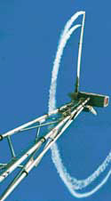
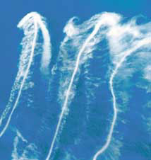

 Wake
effect from wind turbine Wake
effect from wind turbine
Picture © Risø National Laboratory, Denmark |
Since a wind turbine
generates electricity from the energy in the wind, the wind leaving the
turbine must have a lower energy content than the wind arriving in front
of the turbine. This follows directly from the fact that energy can neither
be created nor consumed. If this sounds confusing, take a look at the definition
of energy in the Reference
Manual.
A wind turbine will always cast a wind shade in the downwind
direction.
In fact, there will be a wake behind the turbine, i.e. a long
trail of wind which is quite turbulent and slowed
down, when compared to the wind arriving in front of the turbine. (The expression
wake is obviously derived from the wake behind a ship).
You can actually see the wake trailing behind a wind turbine, if you
add smoke to the air passing through the turbine, as was done in the picture.
(This particular turbine was designed to rotate in a counterclockwise direction
which is somewhat unusual for modern wind turbines).
Wind turbines in parks are usually spaced at least three rotor diameters
from one another in order to avoid too much turbulence around the turbines
downstream. In the prevailing wind direction turbines are usually spaced
even farther apart, as explained on the next page. |